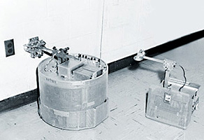

An der Johns Hopkins Universität in Baltimore wurde von Hirnforschern das "Hopkins Beast" entwickelt. Das Hopkins Beast implementierte in Anlehnung an Einzeller verschiedene Verhaltensweisen: das Patrouillieren durch seine Umgebung bis seine Batterien schwach wurden, die anschließende Suche nach "Nahrung" in Form von Ladestationen, das Andocken an die Stationen als Analogie zur Nahrungsaufnahme und das "Schütteln" zum Lösen der Steckverbindung, um die Patrouillie fortzusetzen. Die Photozellen der "Beasts" wurden später durch Videokameras ersetzt, mit denen die Ladestationen besser zu lokalisieren waren. Ein Beast konnte auf diese Weise theroretisch beliebig lange agieren. 1960 sind in den USA etwa 6000 Computer in Betrieb. Das Unternehmen "American Machine and Foundry" vermarktet den zylindrischen Roboter "Versatran", von H. Johnson und V. Milenkovic. Die Programmiersprache LISP wird entwickelt. 1961 wird am MIT der erste Computer mit "Time-Sharing" entwickelt. Heinrich Ernst entwickelt eine computergesteuerte, mech. Hand, "MH-1".